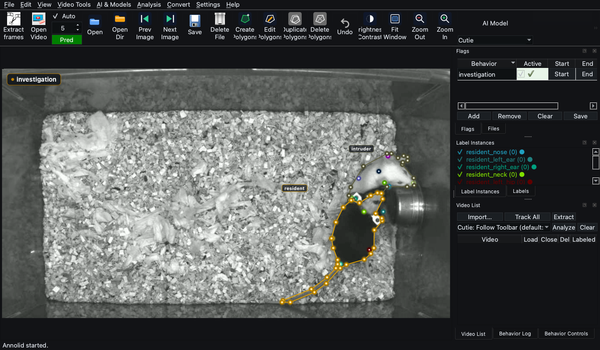
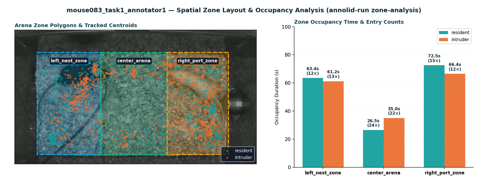

End-to-End Walkthrough: Resident-Intruder Social Assay (mouse083_task1_annotator1)¶
This worked example walks through a complete Annolid analysis pipeline on a real two-mouse resident-intruder home-cage recording (mouse083_task1_annotator1.mp4: 1024 × 570, 30 FPS, 4,881 frames, 162.7 s).
Using one real session, you can see how Annolid connects:
- desktop GUI labeling of instance polygons, 14 anatomical keypoints, and behavior flags,
- multi-animal tracking across challenging close-contact social interactions and tether occlusions,
- automated Track QC and occlusion-gap detection for targeted human-in-the-loop repair,
- spatial zone occupancy and place-preference scoring,
- ethogram time budgets, body-part contact analysis, and self-contained HTML5/SVG reporting, and
- Annolid's matching 3D Two-Mouse and Fly-Brain simulations for synthetic benchmarking.
Animated Tracking & Behavior Preview¶

In this 30 FPS home-cage assay, a tethered black resident mouse (resident, cyan contour + 7 keypoints) interacts with a white intruder mouse (intruder, coral contour + 7 keypoints) on textured aspen bedding near a right-wall feeder port.
1. Project Files & Data Contract¶
Annolid keeps every stage reviewable on disk with plain JSON and CSV contracts:
mouse083_task1_annotator1.mp4 # Source 30 FPS video (1024 × 570, 4,881 frames)
mouse083_task1_annotator1/
project.annolid.json # Canonical ethogram schema (other, investigation, mount)
mouse083_task1_annotator1_000000000.json # Per-frame LabelMe JSON (2 polygons + 14 keypoints + flags)
...
mouse083_task1_annotator1_000004880.json
mouse083_task1_annotator1_tracking.csv # 78,091 rows: RLE masks, bboxes, centroids for all 16 shapes
mouse083_task1_annotator1_tracked.csv # 9,757 rows: per-animal centroids, motion index, timestamps
Each frame JSON contains:
- 2 whole-animal polygons:
residentandintruder - 14 anatomical keypoints (7 per mouse, grouped by
group_id0and1):nose,left_ear,right_ear,neck,left_hip,right_hip,tail_base - Frame-level ethogram flags:
other,investigation, ormount
2. Labeling & Review in the Desktop GUI¶

Inside annolid, the video canvas renders polygons, keypoints, instance badges, and viewport-pinned behavior overlay pills (• investigation), while the right-hand docks synchronize Flags, Label Instances, Video List, Behavior Log, and Behavior Controls.
To run a similar session from scratch:
- Open the video directly in the GUI (
File → Open Video) — frame extraction is optional. - Label a clean seed frame (
Frame 0000) with instance polygons and optional body-part keypoints. - Track polygons across the recording using Cutie, SAM3, or YOLO, and propagate sparse keypoints with DINOv3 Keypoint Tracking.
- Score behavior states (
investigation,mount,other) using Flags, the Timeline playhead, Live Keyboard Coding, or Annolid Bot.
3. Multi-Animal Tracking Across Social States & Track QC¶
Real social-behavior recordings include both clean exploration and difficult high-overlap contact where a mouse temporarily occludes its partner.

- Panel A (Frame 0000 · Seed Frame): Both mice are clearly separated (
494 pxapart), ideal for initializing masks and 14 keypoints. - Panel B (Frame 0260 ·
investigation): Close nose-to-body sniffing near the right port (143 pxcentroid distance) with clean identity separation. - Panel C (Frame 2720 ·
mount): High-overlap dyadic contact where instance polygons and skeletons remain disambiguated. - Panel D (Frame 3362 · Track QC Occlusion Alert): During a close mounting bout (
frames 3346–3422), the black resident directly occludes the white intruder, causing a 5-frameintruderpolygon dropout (frames 3361–3364, 3366).
Rather than silently averaging over tracking errors, run annolid-run track-qc to rank the highest-risk frames for targeted review:
annolid-run track-qc mouse083_task1_annotator1_tracked.csv \
--expected-instances 2 \
--fps 30 \
--review-csv mouse083_review_queue.csv \
--out mouse083_track_qc.json
Double-clicking any row in Analysis → Analysis & Reporting Studio → Track QC & Gaps jumps the main canvas straight to frame 3361 so you can repair the single occluded frame and re-propagate cleanly with Cutie or SAM3.
4. Ethogram Timeline, Social Proximity & Arena Kinematics¶

Running Annolid's kinematics, body-part ethogram, and time-budget analytics on mouse083_task1_annotator1 produces:
| Metric | resident |
intruder |
|---|---|---|
| Observed Frames (Coverage) | 4,881 / 4,881 (100.0%) |
4,876 / 4,881 (99.9%) |
| Path Distance | 27,173.4 px |
20,957.8 px |
| Mean Speed | 167.06 px/s |
128.78 px/s |
| Freezing % (Bouts) | 3.5% (7 bouts) |
4.0% (9 bouts) |
| Inter-Animal Distance | Mean 280.5 px · Min 15.7 px |
Close contact (< 100 px): 5.7% |
Scored behavior time budget across the 162.7 s trial:
| Behavior | Bouts | Total Duration | Mean Bout | Median Bout | % of Session |
|---|---|---|---|---|---|
other |
24 | 103.70 s |
4.32 s |
3.65 s |
63.7% |
investigation |
25 | 39.07 s |
1.56 s |
0.63 s |
24.0% |
mount |
7 | 19.90 s |
2.84 s |
2.57 s |
12.2% |
Notice how sharp drops in the resident-to-intruder centroid distance curve align directly with shaded investigation (blue) and mount (orange) bouts, while the full-session trajectory overlay clearly reveals wall-following thigmotaxis around the home-cage perimeter.
5. Spatial Zone & Place-Preference Analysis¶
Define reusable arena zones in Video Tools → Zones (saved as a LabelMe-compatible *_zones.json with explicit semantic_type=zone metadata) and score occupancy from either the GUI or CLI:
annolid-run zone-analysis mouse083_task1_annotator1_tracked.csv \
--zone-file mouse083_zones.json \
--fps 30 \
--mode zone_metrics \
--output-dir ./mouse083_zone_out

Computed occupancy across three equal-height cage zones (left_nest_zone, center_arena, right_port_zone):
| Instance | Zone | Occupancy % | Entries | Time in Zone | First Entry Latency | Mean Visit |
|---|---|---|---|---|---|---|
resident |
left_nest_zone |
39.0% |
12 | 63.43 s |
0.00 s |
5.29 s |
resident |
center_arena |
16.3% |
24 | 26.47 s |
0.30 s |
1.10 s |
resident |
right_port_zone |
44.6% |
15 | 72.53 s |
1.07 s |
4.84 s |
intruder |
left_nest_zone |
37.6% |
13 | 61.17 s |
4.00 s |
4.71 s |
intruder |
center_arena |
21.5% |
22 | 34.97 s |
2.27 s |
1.59 s |
intruder |
right_port_zone |
40.9% |
12 | 66.40 s |
0.00 s |
5.53 s |
Both animals spend over 78% of the session in the two end zones (left_nest_zone and right_port_zone), passing rapidly through center_arena (mean visit 1.10–1.59 s) during perimeter circuits and social approaches.
6. One-Command Unified HTML5 + SVG Report¶
Generate a self-contained scientific report combining Track QC, Kinematics, Zone Analysis, Body-Part Ethogram (54 anatomical contact bouts), and Behavior Time Budget in one command:
annolid-run report mouse083_task1_annotator1_tracked.csv \
--events-csv mouse083_events.csv \
--zone-file mouse083_zones.json \
--schema mouse083_task1_annotator1/project.annolid.json \
--fps 30 \
--title "mouse083_task1_annotator1 — Resident-Intruder Social Assay" \
--output-dir ./mouse083_report

Open the actual generated HTML5 report right in your browser: mouse083_report.html (live interactive report).
7. Pairing Real Assays with 3D Simulation Twins¶
Need ground-truth pose, body-part masks, or controlled occlusion scenarios before running a large cohort? Annolid ships an offline Two-Mouse 3D Three.js Simulation (View → 3D Examples → Two Mice) modeled on the same black C57BL/6 + white BALB/c paradigm, plus Fly-Brain LIF Connectome Mode and Instance Body Part Segmentation evaluation benchmarks.
Two-Mouse 3D Pose & Benchmark Twin¶

Generate seeded 13-keypoint COCO datasets and occlusion stress tests offline in Three.js. See the Two-Mouse 3D Simulation Guide.
Hierarchical Body-Part Segmentation¶

Decompose tracked whole-animal polygons into non-overlapping head, torso, and tail masks with zero cross-animal bleed. See the Instance Body Part Segmentation Guide.
Regenerating This Showcase on Your Own Video¶
You can regenerate these figures, animated tracking GIF, and sanitized HTML5 report for any Annolid-tracked session with one command:
make showcase-video VIDEO=/path/to/your_tracked_video.mp4
See Deployment & Docs Workflow for local live-preview and validation commands.